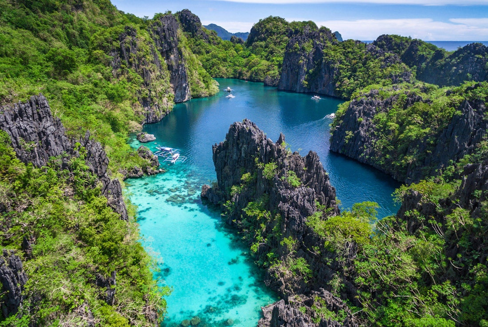

MORE FROM THE PHILIPPINES
The Philippines, an archipelago of over 7,000 islands, is known for its stunning beaches, vibrant culture, and rich biodiversity. With warm, welcoming locals and a unique blend of Spanish, American, and indigenous influences, visitors can explore everything from lush mountains and rice terraces to bustling cities and serene coastal towns. Whether you're seeking adventure, relaxation, or cultural experiences, the Philippines offers an unforgettable journey.


